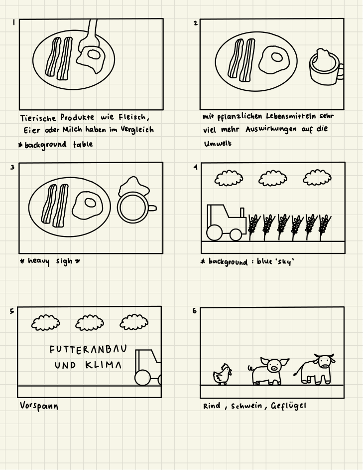
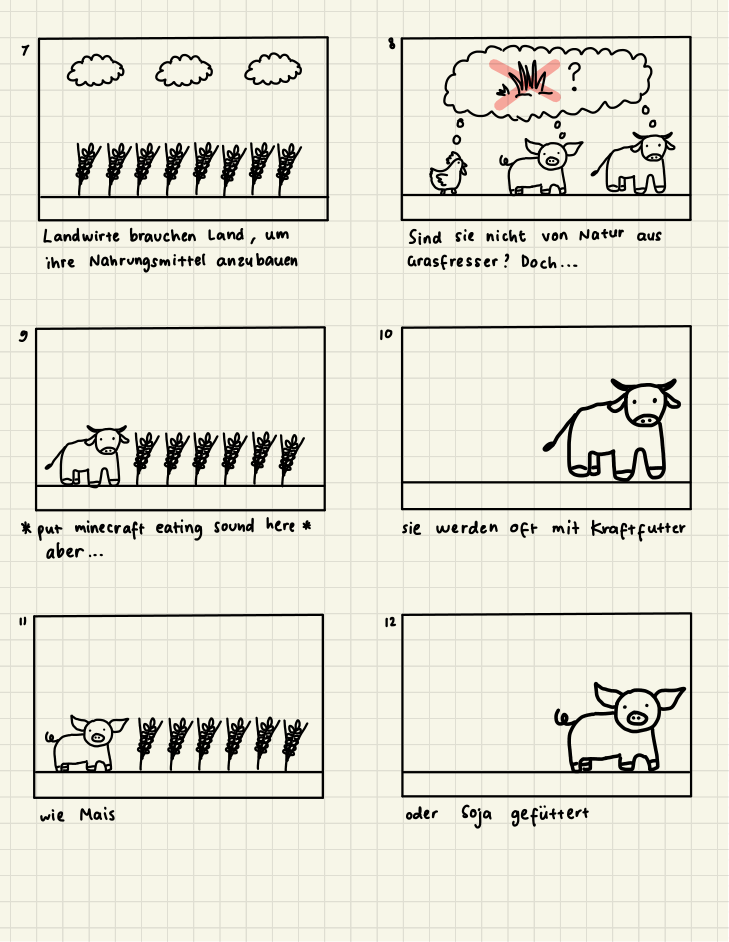
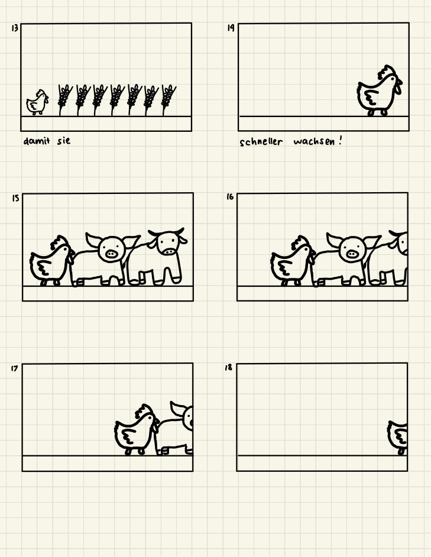
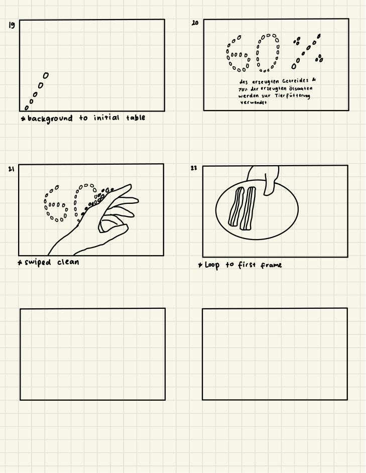

ANIMATION / STOP MOTION / 2024
Futteranbau und Klima
An educational stop-motion animation exploring the environmental impact of animal feed production through handmade clay figures.
about the project
Futteranbau und Klima is an educational stop-motion animation created as a semester project in 2024. It explores the connection between animal feed production and environmental impact in Germany, using handmade clay figures and everyday imagery to communicate a complex topic.
The project began with a storyboard that mapped out the narrative, transitions, and visual elements. Using modelling clay, I created miniature food and animal figures, photographed them frame by frame, and assembled the animation in Adobe Premiere Pro.
from storyboard to screen
Before animating, I planned the sequence through a hand-drawn storyboard. It helped me organise the visual narrative, anticipate transitions, and keep track of individual scenes during production.




the making of
This was my first time experimenting with stop-motion animation. Although it wasn't a medium I had initially been interested in, I unexpectedly enjoyed the hands-on process of shaping the clay figures and capturing the animation one frame at a time.
Production came with a few practical challenges. A faulty tripod meant I had to improvise a different setup for photographing the scenes. Lighting was another obstacle, as I relied on natural daylight that wasn't always consistent.
Working through these limitations taught me the importance of preparation and flexibility. The storyboard proved especially useful: whenever something didn't go according to plan, I could return to it and pick up where I left off.
techniques & tools Modelling clay · Frame-by-frame photography · Adobe Premiere Pro